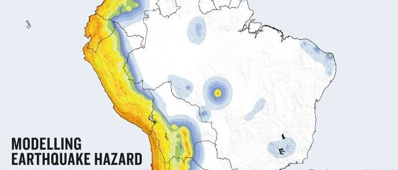

《Nature》杂志：地震风险图确定了世界上最脆弱的地区
《Nature》杂志：地震风险图确定了世界上最脆弱的地区
Earthquake-risk maps pinpoint world’s most vulnerable areas
原文发布于
https://www.nature.com/articles/d41586-018-07705-2
作者：Alexandra Witze
郑哲 译

一名男子在调查9月份于印度尼西亚中部的苏拉威西省发生的7.5级地震造成的破坏。图片来源：Hariandi Hafid / SOPA Images/ LightRocket via Getty
三张新的地图揭示了全球最容易发生地震的地区以及容易遭受地震灾害人口最多的地区。
第一张地图是全球地震灾害地图，它以前所未有的细节展示了全球哪些地区容易发生地震。 例如：太平洋周围的“环太平洋火山带”（见“地震灾害建模”）（译者注：“地震灾害建模”是一张全球的地震危险地图，图二是其在南美洲部分的截图。参考网页：https://www.globalquakemodel.org/gem）
第二张是全球地震风险地图，它突出了建筑物可能因地面震动而受损的区域，如危地马拉。第三张是全球暴露区(exposure)图，它关注世界各地的建筑数量，强调人口稠密地区遭受地震的风险，如：印度尼西亚和印度等地区。
这些于12月5日发布的图表，是全球地震模型协会（GEM）与多个国际组织长达数年协调、合作的结晶。全球地震模型协会（GEM）是意大利帕维亚的一个非营利组织，该组织与来自世界各地的应急管理官员、地质调查及灾难预防小组一起工作。
GEM希望大约每年更新一次基于开源平台构建的地图。

M Pagani等/全球地震模型
全球地震模型协会（GEM）的灾害协调员Marco Pagani表示：地震灾害地图是自1999年以来这类工作首次在全球范围内开展的重大工作。Marco Pagani曾在该地图的发展中发挥了重要的作用。地震灾害地图汇集了来自美国地质调查局、中国地震局等超过30个国家和地区的模型。对于没有最新模型的国家或地区，如哥伦比亚等，全球地震模型协会（GEM）与当地专家合作搭建了相应模型。
该地图反映了对俯冲带（大洋板块俯冲于大陆板块之下的构造带，如日本和智利等地。）周围地震风险评估的最新科学见解。Pagani说，1999年的地震灾害地图强调位于喜马拉雅山周围的地震最频繁，而最近的分析表明位于环太平洋火山带周围的地震灾害比位于喜马拉雅山周围的地震灾害更多。
全球地震模型协会（GEM）的风险和暴露区图探索了可能发生的地震对人类生命意味着什么。全球地震模型协会（GEM）风险协调员Vitor Silva表示：“我们不仅仅谈论地震，我们谈论的是地震造成的人员伤亡和建筑物的倒塌。” Silva领导他的团队制作了全球地震风险地图和全球暴露区地图。
通过与当地的人合作，Silva的团队汇集了有关当地建筑物的信息，诸如：建筑物建造材料、层高以及符合当地抗震建筑规范的可能性等信息。对于数据有限或数据不存在的地区，例如南苏丹，该团队使用卫星图像来分析建筑类型。
Silva说，世界上三分之二的建筑物集中在15个国家或地区，了解易损的建筑物的位置可以帮助当地官员决定在哪里分配资源以加强建筑。
未来版本的地图可能包括诸如海啸风险等因素，也可能使用机器学习来分析在一天中人们暴露在地震风险下概率的变化，该变化由人们进入和离开城市产生。

郑哲
相关研究
长按识别二维码，关注我们的科研动态